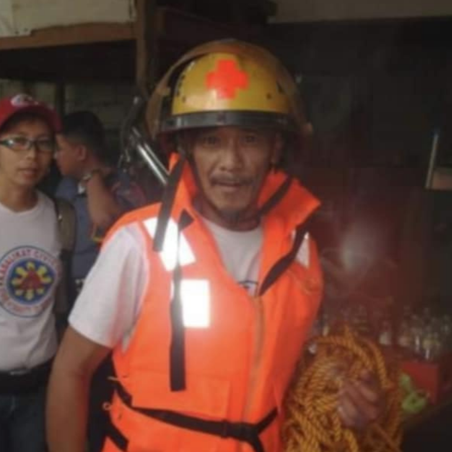

Augusto V. Alpasan, recognized as the father of 929 volunteers, exemplified dedication through every challenge and bravery he faced. He risked everything to save lives during disasters, earning him the title of a hero.
Now, his son, Aliant Anthony M. Alpasan, continues the legacy initiated by his father, ensuring that the 929 Fire and Rescue Volunteer and Radio Communication Group remains a successful group dedicated to assisting our fellow citizens for free. Even in the absence of the father of 929, the organization continues to thrive, carrying on the mission that was started.
